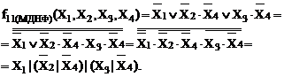
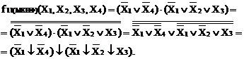
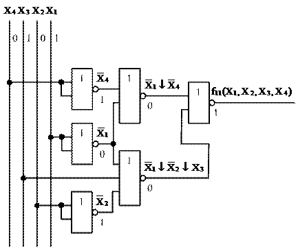
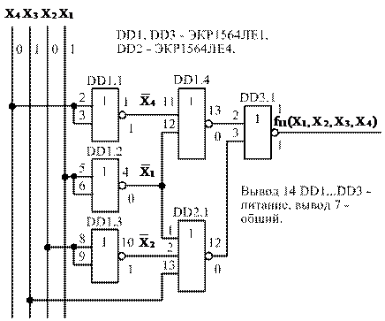

электронный ресурс по учебной дисциплине 1-58 01 01 - "Инженерно-психологическое обеспечение информационных технологий"
|
||
| Оглавление | Программа | Теория | Практика | Контроль знаний | Об авторах | ||
|
Практика ПРАКТИЧЕСКАЯ РАБОТА № 4 СИНТЕЗ КОМБИНАЦИОННЫХ ЦИФРОВЫХ УСТРОЙСТВ В БАЗИСАХ И-НЕ, ИЛИ-НЕ Цель работы 1 Сформировать практические навыки синтеза комбинационных цифровых устройств (КЦУ) в базисах И-НЕ, ИЛИ-НЕ. 2 Сформировать практические навыки и начальные умения построения принципиальных электрических схем КЦУ на микросхемах стандартной логики схемотехники КМОП. Вопросы для самоконтроля 1 Перечислите способы, которыми можно задать одну и ту же ЛФ. Поясните в чем они заключаются? 2 Перечислите этапы синтеза КЦУ и поясните их содержание. 3 Объясните, что представляют собой СДНФ и СКНФ ЛФ? 4 Сформулируйте правила перехода от табличной формы задания ЛФ к аналитической в СДНФ или СКНФ. 5 Объясните, какие задачи решает минимизация и в чем заключается минимизация табличным методом с помощью карт Карно? 6 Объясните, из какой формы ЛФ и как осуществляется переход из базиса И, ИЛИ, НЕ в базисы И-НЕ и ИЛИ-НЕ? 7 Зарисуйте условное графическое обозначение основных ЛЭ по ГОСТ 2.743-91 ЕСКД. 8 Укажите, в какой последовательности выполняются логические операции И, ИЛИ, НЕ. Порядок выполнения работы 1 Выполнить индивидуальное задание № 1. Синтезировать КЦУ в базисе И, ИЛИ, НЕ согласно заданному варианту (таблица 4). 1.1 Задать логическую функцию (ЛФ) с помощью карты Карно. Для МДНФ и МКНФ ЛФ использовать отдельные карты Карно. 1.2 Минимизировать ЛФ табличным методом с помощью карты Карно. Результат минимизации записать в МДНФ и МКНФ. 1.3 Построить две логические схемы устройства по МДНФ и МКНФ ЛФ. Сравнить логические схемы по сложности. 1.4 Проверить правильность функционирования логических схем устройства для пятого набора аргументов. Для этого проставить уровни сигналов на выводах всех логических элементов. Значения сигналов на выходах схем сравнить со значением ЛФ для пятого набора аргументов, они должны совпадать. Таблица 4 – Исходные данные для синтеза КЦУ
2 Выполнить индивидуальное задание № 2. Синтезировать в базисе И-НЕ КЦУ согласно заданному варианту, функционирование которого задано таблицей истинности (таблица 4). 2.1 Преобразовать МДНФ ЛФ в базис И-НЕ. 2.2 Построить логическую схему КЦУ в базисе И-НЕ. 2.3 Построить принципиальную электрическую схему КЦУ в базисе И-НЕ на микросхемах схемотехники КМОП серии 1554. 3 Выполнить индивидуальное задание № 3. Синтезировать в базисе ИЛИ-НЕ КЦУ согласно заданному варианту, функционирование которого задано таблицей истинности (таблица 4). 3.1 Преобразовать МКНФ ЛФ в базис ИЛИ-НЕ. 3.2 Построить логическую схему КЦУ в базисе ИЛИ-НЕ на микросхемах схемотехники КМОП серии 1564. 3.3 Построить принципиальную электрическую схему КЦУ в базисе ИЛИ-НЕ на микросхемах схемотехники КМОП. 4 Проверить правильность функционирования логических и принципиальных схем КЦУ для пятого набора аргументов и сделать вывод о правильности их функционирования. 5 Определить среднюю задержку распространения сигнала от входов к выходу в принципиальных электрических схемах устройств в базисах И-НЕ, ИЛИ-НЕ. 6 Определить среднюю потребляемую мощность в принципиальных электрических схемах в базисах И-НЕ, ИЛИ-НЕ. 7 Ответить на контрольные вопросы. 8 Оформить отчет и сдать зачет. Содержание отчета Отчет должен содержать: 1 Наименование и цель занятия. 2 Условие и решение задачи домашнего задания по заданному варианту (индивидуальное задание № 1). 3 Условия и решения задач по заданному варианту (индивидуальные задания № 2 и № 3). 4 Выводы о результатах проверки правильности функционирования логических и принципиальных схем. 5 Результаты расчетов средней потребляемой мощности и средней задержки распространения сигналов от входов к выходу устройства в принципиальных схемах. 6 Ответы на контрольные вопросы. Контрольные вопросы 1 Укажите особенности минимизации ЛФ, заданной в СКНФ табличным методом с помощью карт Карно. Приведите примеры. 2 Объясните, как в базисах И-НЕ, ИЛИ-НЕ реализуется ЛЭ НЕ? 3 Поясните, как оценивается сложность логической схемы? Требования к знаниям и умениям студентов В результате выполнения лабораторного занятия студент должен знать теоретические основы синтеза КЦУ. Должен уметь: – минимизировать ЛФ табличным методом с помощью карт Карно; – преобразовывать ЛФ из основного базиса в неосновные; – строить логические схемы КЦУ в различных базисах и проверять правильность их функционирования; – строить принципиальные электрические схемы КЦУ на микросхемах стандартной логики и производить расчет их основных электрических параметров. Методические указания Рассмотрим особенности минимизации ЛФ табличным методом с помощью карт Карно и примеры синтеза КЦУ в различных базисах. 1 Для нанесения значений логической функции на карту Карно изучите рисунок 1, на котором указано распределение наборов аргументов по клеткам карты Карно. 2 Для записи результата минимизации в МДНФ в замкнутые контуры (области) объединяйте клетки с единичными и неопределенными значениями ЛФ (Ф – неопределенное или факультативное значение ЛФ), а для записи ЛФ в МКНФ – с нулевыми и неопределенными значениями. При этом следует помнить, что в замкнутые области можно объединять одну, две, четыре, восемь и т.д. клеток. В результат минимизации входят только те аргументы, которые не меняют значение для всех клеток замкнутой области. Если значение аргумента равно 0, то его символ в МДНФ записывается со знаком отрицания, а в МКНФ – без знака отрицания.
Рисунок 1 – Распределение наборов аргументов по клеткам карты Карно 3 Для построения логической схемы устройства в базисе И-НЕ результат минимизации необходимо сначала записать в базисе И, ИЛИ, НЕ в МДНФ, а затем полученную ЛФ преобразовать в базис И-НЕ. 4 Для построения логической схемы устройства в базисе ИЛИ-НЕ результат минимизации необходимо сначала записать в базисе И, ИЛИ, НЕ в МКНФ, а затем полученную ЛФ преобразовать в базис ИЛИ-НЕ. 5 Рассмотрим пример синтеза КЦУ в базисе И, ИЛИ, НЕ, функционирование которого задано таблицей истинности (f11(x1, x2, x3)) в таблице 4. 5.1 Нанесем значения логической функции f11(x1, x2, x3, x4) на карту Карно (рисунок 2) и проведем минимизацию, причем результат минимизации запишем в МДНФ.
Рисунок 2 – Карта Карно для минимизации логической функции в МДНФ (1)
5.2 Построим логическую схему устройства по выражению (1). Для этого потребуется: 1 два логических элемента 2 И; 2 один логический элемент 3 ИЛИ; 3 три логических элемента НЕ. Логическая схема устройства в базисе И, ИЛИ, НЕ, построенная по логической функции (1), представлена на рисунке 3.
Рисунок 3 – Логическая схема устройства в базисе И, ИЛИ, НЕ в МДНФ 5.3 Запишем результат минимизации в МКНФ. Для этого еще раз начертим карту Карно для ЛФ f11(x1, x2, x3, x4) (рисунок 4).
Рисунок 4 – Карта Карно для минимизации логической функции в МКНФ При записи результата минимизации в МКНФ аргументы следует брать с инверсией, если их значения равны 1. (2) 5.4 Построим логическую схему устройства по выражению (2). Для этого потребуется: 1 один логический элемент 2 ИЛИ; 2 один логический элемент 3 ИЛИ; 3 один логический элемент 2 И; 4 три логических элемента НЕ. Логическая схема устройства в базисе И, ИЛИ, НЕ, построенная по ЛФ (2), представлена на рисунке 5. 5.5 Укажем на рисунках 3 и 5 на выходе каждого логического элемента выполняемую логическую операцию и уровень сигнала для пятого набора аргументов. Уровни сигналов на выходах логических схем соответствуют значению ЛФ f11(x1, x2, x3, x4) для пятого набора аргументов (таблица 4), что позволяет судить о правильности их функционирования.
Рисунок 5 – Логическая схема устройства в базисе И, ИЛИ, НЕ в МКНФ 5.6 Сравним по сложности логические схемы КЦУ на рисунках 3 и 5, для этого подсчитаем общее число входов логических элементов. По этому критерию обе схемы одинаковы. 6 Рассмотрим пример синтеза КЦУ в базисе И-НЕ для той же ЛФ. 6.1 Преобразуем ЛФ (1) в базис И-НЕ, используя правило де Моргана: 
6.2 Построим логическую схему устройства в базисе И-НЕ по выражению (3), при этом одиночные отрицания аргументов реализуем на основе ЛЭ 2 И-НЕ с объединенными входами. Для этого необходимо использовать: 1 четыре логических элемента 2 И-НЕ; 2 один логический элемент 3 И-НЕ. Логическая схема устройства в базисе И-НЕ представлена на рисунке 6.
Рисунок 6 – Логическая схема устройства в базисе И-НЕ 6.3 Построим принципиальную электрическую схему устройства в базисе И-НЕ на микросхемах стандартной логики схемотехники КМОП серии 1554. Для этого по приложениям Б и В выбираем стандартные микросхемы интегральных ЛЭ серии 1554 и соединяем их между собой в соответствии с логической схемой на рисунке 6. Выбираем микросхему ЭКР1554ЛА3 (IN74AC00N), в одном корпусе которой выполнено четыре ЛЭ 2 И-НЕ, а также ЭКР1554ЛА4 (IN74AC10N) – три ЛЭ 3 И-НЕ (два останутся свободными). Принципиальная электрическая схема устройства в базисе И-НЕ представлена на рисунке 7. На схеме указаны буквенно-позиционные обозначения микросхем по ГОСТ 2.710-81, номера выводов, а также уровни сигналов для пятого набора аргументов (уровни сигналов указаны под линиями выводов микросхем).
Рисунок 7 – Принципиальная электрическая схема устройства в базисе И-НЕ 6.4 Определим среднюю задержку распространения сигнала от входа к выходу устройства и среднюю потребляемую мощность. В худшем случаем сигнал передается через три ЛЭ. Для расчета средней задержки возьмем данные из приложения Б. В результате получаем суммарную среднюю задержку распространения сигнала от входа к выходу устройства нс. Для расчета средней потребляемой мощности всей схемы необходимо расчетным путем определить среднюю потребляемую мощность каждой микросхемы путем умножения среднего потребляемого тока (приложение Б) на напряжение источника питания. В результате получаем суммарную среднюю потребляемую мощность мкВт. 7 Рассмотрим пример синтеза КЦУ в базисе ИЛИ-НЕ для той же ЛФ. 7.1 Преобразуем ЛФ (2) в базис ИЛИ-НЕ, используя правило де Моргана. 
7.2 Построим логическую схему устройства в базисе ИЛИ-НЕ по выражению (4), при этом одиночные отрицания аргументов реализуем на основе ЛЭ 2 ИЛИ-НЕ с объединенными входами. Для этого необходимо использовать: 1 пять логических элементов 2 ИЛИ-НЕ; 2 один логический элемент 3 ИЛИ НЕ. Логическая схема устройства в базисе ИЛИ-НЕ представлена на рисунке 8. 7.3 Построим принципиальную электрическую схему устройства в базисе ИЛИ-НЕ на микросхемах стандартной логики схемотехники КМОП серии 1564. Для этого по приложениям Б и В выбираем стандартные микросхемы интегральных ЛЭ серии 1564 и соединяем их между собой в соответствии с логической схемой (рисунок 8). Выбираем микросхему ЭКР1564ЛЕ1 (IN74HC02AN), в одном корпусе которой выполнено четыре ЛЭ 2 ИЛИ-НЕ (необходимо использовать два корпуса этой микросхемы, причем три ЛЭ второго корпуса останутся свободными), а также ЭКР1564ЛЕ4 (IN74HC27AN) – три ЛЭ 3 ИЛИ-НЕ (два ЛЭ останутся свободными). Принципиальная электрическая схема устройства в базисе ИЛИ-НЕ представлена на рисунке 9. На схеме выполнены обозначения в соответствии с п. 6.3.  Рисунок 8 – Логическая схема устройства в базисе ИЛИ-НЕ 7.4 Определяем среднюю задержку распространения сигнала от входа к выходу устройства и среднюю потребляемую мощность. В худшем случае сигнал передается через три ЛЭ. Расчет средней задержки выполним аналогично п. 6.4. В результате получаем среднюю задержку нс. Расчет средней потребляемой мощности выполним аналогично п. 6.4. В результате получаем среднюю потребляемую мощность мкВт. Таким образом, устройство на микросхемах серии 1554 имеет более высокое быстродействие и, следовательно, большую среднюю потребляемую мощность.  Рисунок 9 – Принципиальная электрическая схема устройства в базисе ИЛИ-НЕ 8 Проверим правильность функционирования логических и принципиальных схем КЦУ в базисах И-НЕ, ИЛИ-НЕ (рисунки 6…9). Для этого проставим на выходах всех логических элементов значения сигналов для пятого набора аргументов. Поскольку на выходах логических схем единичный уровень сигнала, то они функционируют в соответствии с таблицей истинности (см. значение логической функции f11 для пятого набора аргументов). 9 Сравним по сложности логические и принципиальные схемы КЦУ на рисунках 6…9, для этого подсчитаем общее число входов логических элементов. По этому критерию схемы в базисе И-НЕ проще.
| |||||||||||||||
| (С) БГУИР |